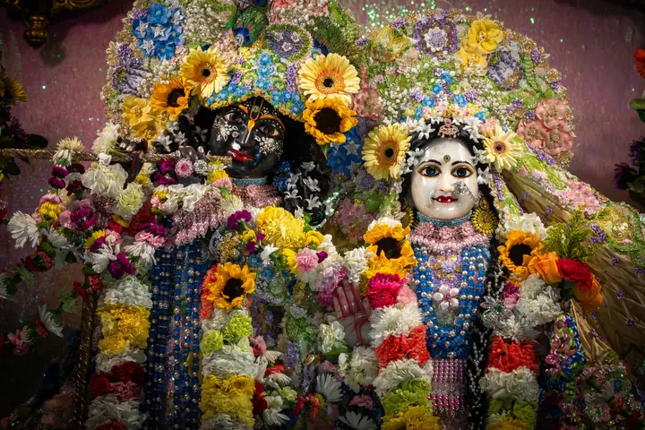
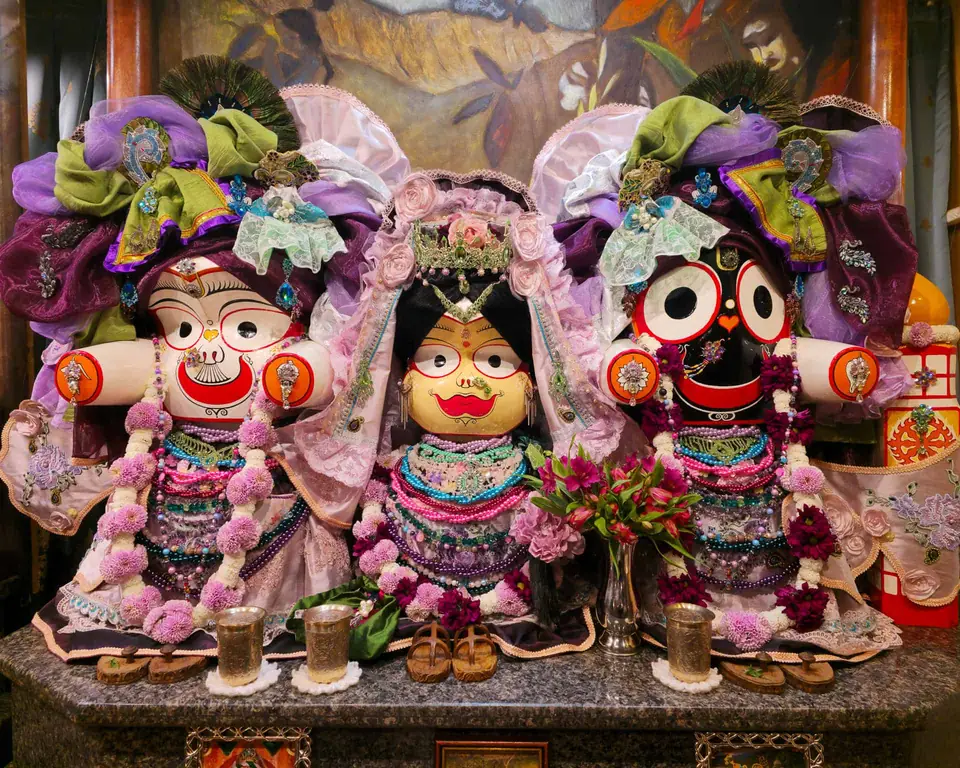
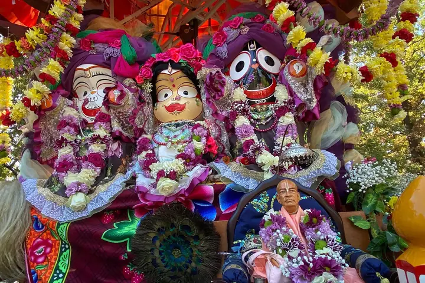
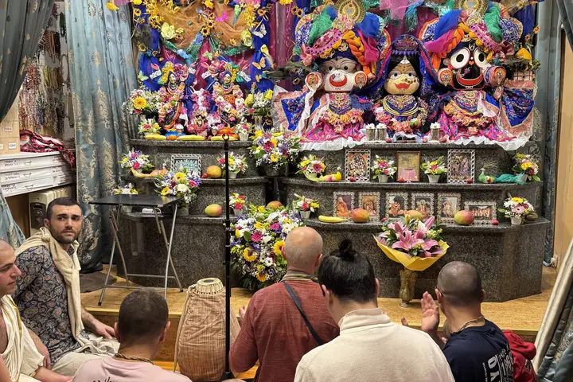
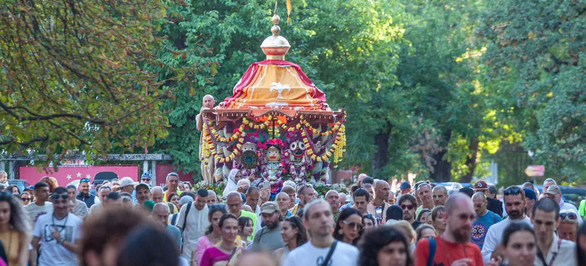

Божествата Радха и Кришна, 2023
Какво е Кришна съзнание
Кришна съзнание означава да живеем с осъзнаване на връзката си с Бога, да възстановим естествената си любов към Него и към всички живи същества.
ПрочететеДревна духовна традиция, жив път днес
Вероизповедание от традицията на Гаудия ваишнавизма, пътят на бхакти, любящата преданост към Бога, познат в Бхагавад-гита и Шримад Бхагаватам.
Научете повече

Божествата Радха и Кришна, 2023
Кришна съзнание означава да живеем с осъзнаване на връзката си с Бога, да възстановим естествената си любов към Него и към всички живи същества.
Прочетете
Божествата на колесницата, Ратха ятра в София, 2025
Бог е личност. Вярваме, че Абсолютната Истина в крайна сметка е личност, изпълнена с любов, а не безлична сила. Душата е вечна: истинското „аз“ не загива със смъртта на тялото.
Прочетете
Гаура Пурнима в храма, София, 2025
Лекциите, класовете и съботните програми са открити за гости. Заповядайте, за да се запознаете отблизо с традицията.
ПрограматаРаботно време на храма в София.
8:00
Клас по Шримад Бхагаватам.
15:30 до 19:30
Празнична програма.
Фестивалът се провежда в България от 1996 г. 31-вият е на 23.08.2026 в парк „Борисова градина“, шествието с колесница е от 15:00 до 18:30.

И двете. Кришна съзнание е пълноценно монотеистично вероизповедание със свое богословие, практика и свещени текстове, което същевременно се изразява в цялостен начин на живот.
В един. Признаваме един-единствен Върховен Бог, който има безброй имена и форми. „Кришна“ е едно от имената Му, означаващо „всепривличащият“.
Не. Изповеданието е открито за всеки човек, независимо от произход. То не изисква приемане на чужда култура, а съживяване на вродената връзка на душата с Бога.
Разбира се. Лекциите, класовете и съботните програми са открити за гости. Заповядайте, за да се запознаете отблизо с традицията.
Вегетарианска храна, приготвена с грижа и предложена най-напред на Бога. Споделянето ѝ е сред най-обичаните дейности на общността.
Книгите на Шрила Прабхупада предават знанието от първоизточника. Тяхното издаване и споделяне е една от седемте цели на изповеданието.
Не намерихте отговор? Пишете ни
Най-известният и почитан духовен текст на Индия, разговорът между Кришна и Арджуна, с пълен санскритски текст, превод и подробен коментар на Шрила Прабхупада. Основополагащо четиво за всеки, който се интересува от ведическата мъдрост.
„Зрелият плод на ведическото дърво на знанието.“ Многотомно издание с превод и коментар, разкриващо науката за Бога и пътя на чистата преданост.
Сборник от есета и разговори, които представят основите на Кришна съзнание за съвременния читател, отлично въведение.
Как да поръчате: пишете ни на info@krishnabg.com или се обадете на 02 961 60 50.
Данни за контакт: в процес на допълване.